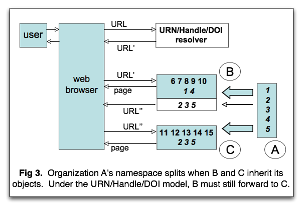
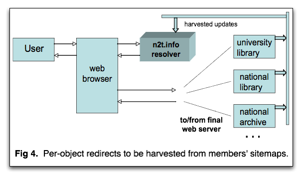
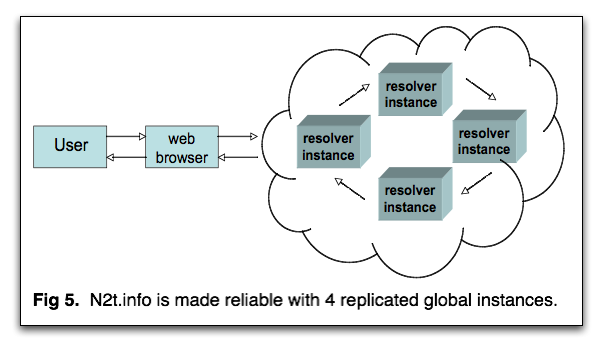

N2T (Name-to-Thing) is a persistent identifier resolver and a consortium of cultural memory organizations. The consortium has no fees or requirements, and merely offers its members the option to publicize a protected form of their URLs supported by the resolver. The resolver is a small, standard web server run in several mirrored instances by consortium volunteers under one hostname rented for about $30 USD per year.
To get started, each member organization is permanently given a unique number, such as 12345, to be inserted (as in Figure 1) into URLs that look like
Entered into a standard web browser, it gets redirected to something likehttp://n2t.info/12345/foo/bar.zaf
which is a URL pointing into the member organization's local server. After redirection, N2T has no further responsibility, as persistence of the local URL is up to the member to maintain.http://www.example.org/foo/bar.zaf
N2T safeguards members' published object (e.g., document, image, video, concept) identifiers from hostname instability. When a member changes its hostname, a change to a single N2T resolver rule keeps the protected form of its identifiers working. If a member organization can no longer continue operating, other N2T consortium members may be able to help maintain services for its object (or thing) names. As in life, of course, there are no guarantees. The best a resolver system can do for persistence is to make maintenance easy for those institutions whose missions include persistence.
The N2T resolver is a simple redirecting web server that, initially, uses the same model as URN, Handle, and DOI resolvers for "forwarding" a persistent identifier to the most current provider location. N2T is the only resolver that doesn't require web browser modifications and that offers a solution to the inevitable namespace splitting problem.
Figure 2 shows the basic flow.
On behalf of a user, the web browser requests access to a
persistent URL under the hostname n2t.info, that being
the hostname that consortial members use for the protected form of their
URLs. Unbeknownst to the user, n2t.info doesn't actually
hold the object but forwards the request, causing the browser to fetch
and display the page for URL' held on the appropriate organizational web
server. Forwarding currently works only with the HTTP web protocol, and
here we will call this kind of "protected HTTP URL" a PHURL.
The final identifier (the target of forwarding) need not be a PHURL,
however – it can be any URI recognized by your web browser.
With all resolver systems, resolution (access to the thing given its name) relies ultimately on the local provider maintaining the thing. N2T is lower risk than most systems in the long term because it does not depend on complex, special-purpose, or proprietary infrastructure that itself becomes a liability going forward into the future. Nonetheless, all resolver systems will fail for any identifier that a provider fails to resolve at the local level.
The N2T consortium is intended to support persistent identification for networked information. Since that goal has proved surprisingly elusive generally, the consortium focuses on institutions whose missions contain persistence, in particular, cultural memory organizations. This includes national libraries, national archives, governmental agencies, and patent offices, as well as institutions of higher education (colleges, universities) and their affiliated learned societies, scholarly publishers, libraries, and museums. Also included are significant content hosting organizations on whom cultural memory organizations rely for long term information services.
The consortium is in an experimental phase and currently consists of
Originally conceived for ARK identifiers, N2T can work with any scheme that allows its identifier to be expressed in a URL, such as Handle, DOI, URN, and PURL. Each includes the concept of Name Assigning Authority (NAA), which is an organization that assigns names to things. The NAA is sufficient to create a unique redirection rule for each member organization that wishes it. The "PHURLs" (protected HTTP URLs) for currently N2T-resolvable identifiers look like,
wherehttp://n2t.info/NAA/... (NAA = N2T NAA Number, eg, 12345) http://n2t.info/ark:/NAA/... (NAA = ARK NAA Number, eg, 12345) http://n2t.info/urn:NAA:... (NAA = URN Naming Authority, eg, nbn) http://n2t.info/hdl:NAA/... (NAA = Handle Naming Authority, eg, 12345) http://n2t.info/doi:NAA/... (NAA = DOI Naming Authority, eg, 10.12345) http://n2t.info/purl:/NAA/... (NAA = PURL Resolver Hostport, eg, purl.org)
NAA would be replaced by a Name Assigning
Authority designator (e.g., number, acronym, host) appropriate to the
scheme. In another way of looking at it, a PHURL consists
of three substrings,
and the function of the N2T resolver is first to do a lookup on the entire PHURL for a per-object redirection rule. Failing that, the N2T resolver is then to do a lookup on the Globalprefix for a per-organization rule and redirect the PHURL tohttp://n2t.info/ + Globalprefix + Localpath
where Localprefix designates an organizational resolver service (a Name Mapping Authority, perhaps one of several in succession or in parallel) that can respond to requests for the string Localpath. The Globalprefix can be any globally unique string, chosen either to fit in with a legacy resolution system syntax or to be one of the opaque 5-digit numbers (e.g., 12345) assigned to N2T consortium members.http:// + Localprefix + Localpath
One special feature is that if the URN, Handle, DOI, or PURL software infrastructures should ever go out of existence, the N2T resolver can be used as a safety net. By adding per-object rewrite rules for all of an infrastructure's identifiers, N2T can effectively re-implement its resolution system, but this time using off-the-shelf, commodity technology.

After a period of time, perhaps years away, every organization's
namespace is vulnerable. An organization's namespace is the
set of names that it assigns, such as those beginning
http://n2t.info/12345/....
In the fortunate circumstance that successor organizations are available
– usually just for serving the objects rather than for assigning
new names – the N2T resolver greatly
simplifies the long term burden compared to URN, Handle, and DOI systems.
There would be no need for simplification if all objects named by each
organization went over to exactly one successor, except that in real life
namespaces eventually split.
A namespace splits when its objects are inherited by more than one successor. Consider what happens when the objects named by organization A go over to organizations B and C. As shown in Figure 3, to keep A's object identifiers persistent, the URN, Handle, and DOI systems require that one organization, say B, be willing and able to be contacted for all of A's identifiers, including those that B would have to forward on to C. With few exceptions, the burden would belong to B to implement and maintain a redirection table for objects hosted at C. In other words, one cultural memory organization that inherits a subset of a deceased organizations's objects would have the additional responsibility of inventing and maintaining an ad hoc redirection mechanism for the subsets of objects inherited by other organizations.
By contrast, the N2T resolver can maintain one large table of redirection rules not only per-organization but also, as needed and when the time comes, per-object. If C hosts the greater proportion of A's objects, N2T would have a per-organization rule that forwards requests for A's objects to C unless for any particular object a per-object rule forwarding to B existed. This simplifies and speeds up the overall forwarding architecture, and requires only that organization B provide N2T with a list of the subset of A's object names that it serves. This list is a kind of sitemap.
A sitemap is usually a comprehensive, machine-readable list of accessible URLs that an organization places on its web server in a well-known location. In our example, organization B would maintain a partial sitemap – just its subset of A's objects (formatted and harvested using methods likely to be implemented by modifying available sitemap generating software) – for the purpose of allowing an N2T process to harvest and convert it into a set of per-object rules at the resolver. There would also be no problem with multiple resolution. If for some reason the same object were hosted simultaneously at B and at C, both B and C would maintain sitemaps listing the object name. Unlike the URN/Handle/DOI model, in no case would an N2T member organization have to maintain forwarding information for another member's objects.
A common but overblown concern has been that this kind of centralized per-object service strategy might not scale up to deal with requests for all the world's objects. First, N2T deals with a tiny fraction of the world's objects. Persistence, being purely a matter of service, is too expensive and unprofitable to maintain for any but a small number of objects held in the world's cultural memory organizations. Of this tiny fraction of the world's objects that N2T would redirect, an even smaller fraction (zero to start with) would have per-object rules. Those rules would only be called for as namespaces split (and they could go away if that namespaces ever merged with another). Second, the scaling concern has been greatly allayed with the appearance of large Internet search engine sites that centralized behind single hostnames; these exceeded by orders of magnitude predictions about the scale at which such services could be built.
Currently there is a significant problem with all redirecting systems, equally affecting N2T, URN, Handle, DOI, and PURL resolvers. The problem is that web browsers display the final identifier (the target of forwarding) in the location field as opposed to the persistent HTTP URL (PHURL). But the user, satisfied that the document on the screen is the one desired, then bookmarks it, and in so doing fails to save the persistent identifier. It's the right document, but the wrong bookmark. Various solutions, such as reverse-proxying, require relatively sophisticated technical implementations from each individual provider server.
The N2T consortium is well positioned to create a simple and direct solution for the impersistent bookmark glitch. The technical change would be small, but requires overcoming inertia among maintainers of web browsers and servers – this is where it will be useful to have the world's cultural institutions speaking with one voice. Possible technical remedies include modifications to the HTTP protocol that would allow a server to redirect to one URL while indicating another URL more suitable for bookmarking (e.g., by instructing the browser to leave the original PHURL in the location field). The expectation is that the changes could be tested and deployed in browser extensions, and browser makers would eventually fix the display behavior accordingly.
It's not hard for a web server running on a modest-sized computer to support simple redirection for a consortium of 200 cultural memory organizations. Initially, it requires a file of only 200 "rewrite rules". To make the service highly reliable and responsive, identical copies of the rules will be kept at 4 to 8 resolver instances world-wide (see Figure 4). Being considered is the possibility of keeping primary and failover DNS-based global server load-balancers (GSLBs) designed to route incoming requests to the closest and most responsive instances.
While it is unclear how soon and at what rate per-object rewrite rules will be needed, the current open-source N2T resolver, based on the fast, scalable BerkeleyDB software, is already capable of supporting several million per-object rules without any performance degradation. If the assumption is correct that persistence will be provided largely by cultural memory organizations, it seems reasonable to project that growth issues may not have to be addressed for at least several years.
To keep the consortium strong, it is important that members avoid common mistakes. Impersistence is mostly due to factors far beyond the name that was once assigned to an object; there is very little that the name can do in the face of funding loss, natural disaster, or war. Having said that, awareness of some easily avoidable causes of failure can give members a better chance to deal with the bigger challenges.
Neglect
The most perfect identifier scheme is guaranteed to produce a very
unsatisfactory user experience – such as "404 page not found"
– if the provider neglects to forward requests for information
that has moved at the local level. Organizations don't always understand
that maintenance of a forwarding table will be an inescapable burden of
persistence. Those that do understand are able to make realistic
decisions about whether to provide persistence at all, and if so,
for which things and at what cost.
Non-opaque identifiers
Opaque identifiers (lacking widely recognizable linguistic parts) tend
to age and travel well. There is a tension between opaque and
semantically-laden identifiers, the latter often containing quite
useful descriptive data such as publisher, date, volume, issue, author,
etc. – essentially, they double as ad hoc metadata containers.
The problem is that in the press of business providers often forget how
transient a given semantic context is. Organizations change names,
file system hierarchies are re-organized, vocabulary systems are modified,
and natural language evolves.
There is no shortage of anecdotes about semantically-laden identifiers that are unmaintainable when they become misleading, offensive, or infringing. A classic example of the tension is the desire to brand a URL by putting into the path or hostname a departmental acronym that reflects a current trend in enterprise thinking. It also doesn't matter if the problematic semantics were unintended, as a chance combination of letters with no meaning at the time of naming may represent a controversial acronym ten years later. The further away from natural language an identifier appears, the more future-proof it will be, and unfortunately in some uses, unfriendly. Each naming organization should carefully balance what mixture of opacity and semantics to strike within its long term identifiers.
Because opaque identifiers contain fewer clues about their formation, certain properties can help mitigate transcription problems. Do they have check characters? Are they so long that they are difficult to copy and paste? Are there letters that could be mistaken for digits? Are internal hyphens that text formatters might insert ignorable? Useful in this regard may be software tools for generating and resolving identifiers, such as NOID (nice opaque identifiers, available open-source). More discussion of ways to harden general URLs against some known age-related disorders may be found in reading about ARK identifiers, which are URLs with embedded protocol-independent identifiers and conventions for returning descriptive and policy metadata.
No successor
If a provider can no longer serve a set of objects and there is no
successor provider for them to move to, the identifier is guaranteed
to break. The more vulnerable a provider organization is to ceasing
operations, the more important it is to have a successor agreement.
Moreover, unless rights restrictions are loose enough to allow a
successor to hold and serve the objects, absent extraordinary
changes in our legal environment, those objects will effectively
disappear when the original provider disappears.
The N2T consortium supplies an excellent forum in which to look for a successor. If none can be found, or if a specific object simply doesn't exist, the consortium encourages providers to return a standard "tombstone" page and a status code communicating to users and automated processes (such as link validators and crawlers) that the object is no longer available. Not every successor organization will immediately have the funding to provide all of its predecessor's services, which may have included full object access. The consortium will encourage, however, that within a reasonable time the successor be able to set up automated services that at least recognize inherited names and provide access to limited metadata for them.
Misplaced faith in technology
Some organizations believe that using a so-called persistent identifier
system will make their names more stable – even if only a little
more stable – than with ordinary URLs. Actually the opposite may
be true, primarily because they will be completely dependent on a
special-purpose software infrastructure, perhaps complex and proprietary,
that itself becomes a liability to persistence. We in the cultural memory
community are fortunate that web browsers and the general Internet
infrastructure (Apache, DNS, etc.) will be repaired by many other
larger and better-funded communities before we notice they've broken.
On the other hand, any special-purpose infrastructure will be our
responsibility to maintain into the future.
Another source of instability with some persistent identifier systems is the requirement to maintain a table of forwarding information for every collection object from the outset. By contrast, with ordinary URLs, a table need only be as large as the number of URLs that have already been moved. Actual table maintenance is an equivalent burden across all identifier schemes, and any organization capable of maintaining a two-column database table can forward their URLs by exporting it periodically as a set of web server redirect directives.
There is no technical reason why an arbitrary name cannot be mapped to an arbitrary object indefinitely. There are, however, important socio-organizational and usability factors that can make continued maintenance of certain names difficult or impossible for our descendants. Often, organizations don't fully understand the costs and responsibilities of long term maintenance. When they do understand, they may conclude that they cannot afford to preserve all, or perhaps any, of their objects. Such understanding is crucial to our society's ability to assess which objects are at risk and what measures may be required to preserve them.